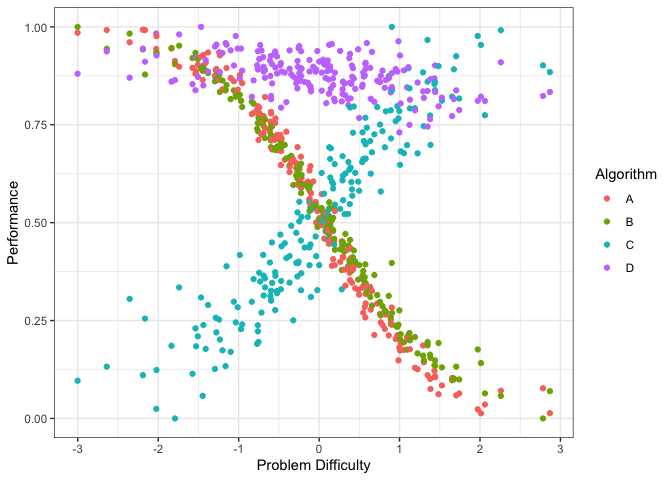
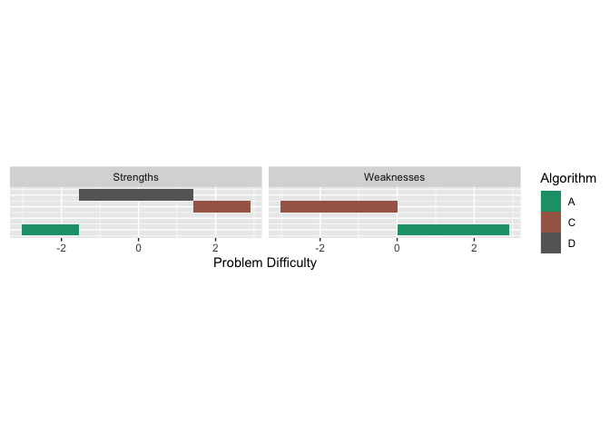
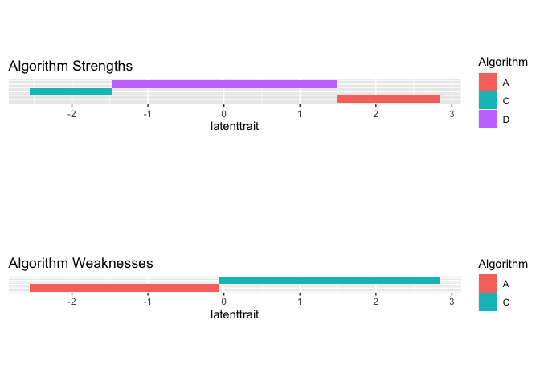

The goal of airt is to evaluate algorithm performances using Item Response Theory (IRT). You can use airt to evaluate the performance of a group of algorithms on a collection of test instances. The polytomous IRT model is fitted using the R package mirt and the continuous IRT model is fitted using updates to the code in EstCRM.
Installation
You can install the released version of airt from CRAN with:
install.packages("airt")You can install the development version from GitHub with:
# install.packages("devtools")
devtools::install_github("sevvandi/airt")Example - continuous
Let us consider some synthetic performance data. In this example the performance of algorithm A is positively correlated with the performance of algorithm B, but negatively correlated with the performanc of algorithm C. Algorithm D is positively correlated with algorithm A. However, algorithm D has very high performance values.
library(airt)
library(ggplot2)
library(gridExtra)
set.seed(1)
algo1 <- runif(200)
algo2 <- 2*algo1 + rnorm(200, mean=0, sd=0.1)
algo2 <- (algo2 - min(algo2))/(max(algo2) - min(algo2))
algo3 <- 1 - algo1 + rnorm(200, mean=0, sd=0.1)
algo3 <- (algo3 - min(algo3))/(max(algo3) - min(algo3))
algo4 <- 2 + 0.2*algo1 + rnorm(200, mean=0, sd=0.1)
algo4 <- algo4/max(algo4)
df <- cbind.data.frame(algo1, algo2, algo3, algo4)
colnames(df) <- c("A", "B", "C", "D")
g1 <- ggplot(df, aes(A, B)) + geom_point()+ coord_fixed() + xlab("Algorithm A") + ylab("Algorithm B") + theme_bw()
g2 <- ggplot(df, aes(A, C)) + geom_point() + coord_fixed() + xlab("Algorithm A") + ylab("Algorithm C") + theme_bw()
g3 <- ggplot(df, aes(A, D)) + geom_point()+ xlab("Algorithm A") + ylab("Algorithm D") + coord_fixed() + ylim(0,1) + theme_bw()
grid.arrange(g1, g2, g3, layout_matrix=cbind(1,2,3))Let us fit a continuous IRT model to this data.
df2 <- df
max_item <- max(df2)
min_item <- 0
max.item <- rep(max_item, dim(df2)[2])
min.item <- rep(min_item, dim(df2)[2])
df2 <- as.data.frame(df2)
modout <- cirtmodel(df2, max.item, min.item)
paras <- modout$model$param
gdf <- prepare_for_plots_crm(modout$model) # , thetarange = c(-8, -2)
ggplot(gdf, aes(theta, z)) + geom_raster(aes(fill=pdf)) + xlab("Theta") + facet_wrap(~Algorithm, nrow=1) + coord_fixed(ratio=1) + theme_bw() + scale_fill_viridis_c(option = "plasma")
The figure above shows the probability density of the fitted IRT model over Theta and z values. The y axis denotes the normalized performance values. The high density regions are showed by the lighter coloured parts. We see that algorithms A and B obtain high performance values for high Theta values. Theta denotes the dataset easiness. However, algorithm C obtains high performance values for low Theta values. These are difficult datasets. Algorithm C gets low performance values for easy datasets. Algorithm D, does not discriminate among the datasets, as such it is a stable algorithm.
We can also look at the datasets and their easiness with respect to the algorithms. This is called the latent trait analysis.
obj <- latent_trait_analysis(df2,modout$model$param,min.item,max.item, epsilon = 0 )
#> Warning: The `x` argument of `as_tibble.matrix()` must have unique column names if `.name_repair` is omitted as of tibble 2.0.0.
#> Using compatibility `.name_repair`.
#> This warning is displayed once every 8 hours.
#> Call `lifecycle::last_lifecycle_warnings()` to see where this warning was generated.
#> Joining, by = "group"
#> Joining, by = "group"
dfl <- obj$longdf
g1 <- ggplot(dfl, aes(Latent_Trait, value)) + geom_point(aes(color=Algorithm)) + xlab("Latent Trait (Dataset Easiness)") + ylab("Performance") + theme_bw()
g1
The figure above shows the performance of the 4 algorithms on different datasets ordered by dataset easiness. Again, we see that the performance of algorithms A and B increase with dataset easiness while the performance of algorithm C decreases with dataset easiness. Even though the performance of Algorithm D increases with dataset easiness it is very stable.
g3 <- ggplot(dfl, aes(Latent_Trait, value)) + geom_point(aes(color=Algorithm)) + xlab("Latent Trait (Dataset Easiness)") + facet_wrap(~Algorithm, nrow=2) + coord_fixed(ratio=6) + ylab("Performance") + theme_bw()
g3
The above figure shows the performance by algorithm.
### Curve fitting - smoothing splines - latent trait
g2 <- ggplot(dfl, aes(Latent_Trait, value)) + geom_smooth(aes(color=Algorithm), se = FALSE, method = "gam", formula = y ~s(x, bs="cs"))+ xlab("Latent Trait (Dataset Easiness)") + ylab("Performance") + theme_bw() +theme(legend.position="bottom", legend.box = "horizontal")
# g2We fit smoothing-splines to the performance data by algorithm. The figure above shows these smoothing splines for each algorithm as a function of the dataset easiness. From this figure, we can get the best algorithm for a given dataset easiness. This gives us the proportion of the latent trait spectrum occupied by each algorithm. We call this the latent trait occupancy.
latent <- obj$strengths
latent$proportions
#> # A tibble: 3 × 4
#> group Proportion algorithm colour
#> <dbl> <dbl> <chr> <chr>
#> 1 4 0.87 D #C77CFF
#> 2 1 0.065 A #F8766D
#> 3 3 0.065 C #00BFC4
num_algos <- length(unique(dfl$Algorithm))
colrs <- scales::hue_pal()(num_algos)
latenttr <- obj$strengths$multilatent
dfl2 <- tidyr::pivot_longer(latenttr, cols = 2:dim(latenttr)[2])
colnames(dfl2)[2] <- "Algorithm"
dfl2 <- dfl2[dfl2$value!=0, ]
new_vals <- seq(1, length(unique(dfl2$value)), by = 1)
dfl2$value <- new_vals[as.factor(dfl2$value )]
dfl2$value <- dfl2$value*0.1
colrs2 <- colrs[which(sort(unique(dfl$Algorithm)) %in% unique(dfl2$Algorithm))]
g6 <- ggplot(dfl2, aes(x = latenttrait, y =value, fill = Algorithm)) + geom_tile() + theme(axis.title.y=element_blank(), axis.text.y=element_blank(),axis.ticks.y=element_blank()) + scale_fill_manual(values = colrs2) + ggtitle("Algorithm Strengths") + coord_fixed(ratio=1)
latenttr2 <- obj$weakness$multilatent
dfl3 <- tidyr::pivot_longer(latenttr2, cols = 2:dim(latenttr)[2])
colnames(dfl3)[2] <- "Algorithm"
dfl3 <- dfl3[dfl3$value!=0, ]
new_vals <- seq(1, length(unique(dfl3$value)), by = 1)
dfl3$value <- new_vals[as.factor(dfl3$value )]
dfl3$value <- dfl3$value*0.1
colrs2 <- colrs[which(sort(unique(dfl$Algorithm)) %in% unique(dfl3$Algorithm))]
g7 <- ggplot(dfl3, aes(x = latenttrait, y =value, fill = Algorithm)) + geom_tile() + theme(axis.title.y=element_blank(), axis.text.y=element_blank(),axis.ticks.y=element_blank()) + scale_fill_manual(values = colrs2) + ggtitle("Algorithm Weaknesses") + coord_fixed(ratio=1)
g2
grid.arrange(g6, g7) We see that algorithms A, C and D occupy 0.065, 0.0.065 and 0.87 of the latent trait respectively. Algorithm C is best for difficult datasets, while algorithm D dominates the middle of the spectrum. Algorithm A is better for easy datasets.
Next we look at a polytomous example.
Example - polytomous
set.seed(1)
algo1 <- sample(1:5, 100, replace = TRUE)
inds1 <- which(algo1 %in% c(4,5))
algo2 <- rep(0, 100)
algo2[inds1] <- sample(4:5, length(inds1), replace = TRUE)
algo2[-inds1] <- sample(1:3, (100-length(inds1)), replace = TRUE)
algo3 <- rep(0, 100)
algo3[inds1] <- sample(1:2, length(inds1), replace = TRUE)
algo3[-inds1] <- sample(3:5, (100-length(inds1)), replace = TRUE)
algorithms <- cbind.data.frame(algo1, algo2, algo3)
mod <- pirtmodel(algorithms)
#> Iteration: 1, Log-Lik: -539.061, Max-Change: 1.21454Iteration: 2, Log-Lik: -434.043, Max-Change: 1.03064Iteration: 3, Log-Lik: -407.239, Max-Change: 0.78911Iteration: 4, Log-Lik: -400.194, Max-Change: 0.51251Iteration: 5, Log-Lik: -397.982, Max-Change: 0.33354Iteration: 6, Log-Lik: -397.157, Max-Change: 0.22781Iteration: 7, Log-Lik: -396.601, Max-Change: 0.10977Iteration: 8, Log-Lik: -396.515, Max-Change: 0.09151Iteration: 9, Log-Lik: -396.466, Max-Change: 0.07606Iteration: 10, Log-Lik: -396.384, Max-Change: 0.03591Iteration: 11, Log-Lik: -396.378, Max-Change: 0.03656Iteration: 12, Log-Lik: -396.373, Max-Change: 0.02963Iteration: 13, Log-Lik: -396.357, Max-Change: 0.03294Iteration: 14, Log-Lik: -396.354, Max-Change: 0.02403Iteration: 15, Log-Lik: -396.352, Max-Change: 0.02184Iteration: 16, Log-Lik: -396.348, Max-Change: 0.01044Iteration: 17, Log-Lik: -396.348, Max-Change: 0.01064Iteration: 18, Log-Lik: -396.348, Max-Change: 0.01132Iteration: 19, Log-Lik: -396.346, Max-Change: 0.01316Iteration: 20, Log-Lik: -396.346, Max-Change: 0.00796Iteration: 21, Log-Lik: -396.346, Max-Change: 0.00823Iteration: 22, Log-Lik: -396.345, Max-Change: 0.00348Iteration: 23, Log-Lik: -396.345, Max-Change: 0.00418Iteration: 24, Log-Lik: -396.345, Max-Change: 0.00264Iteration: 25, Log-Lik: -396.345, Max-Change: 0.00038Iteration: 26, Log-Lik: -396.345, Max-Change: 0.00021Iteration: 27, Log-Lik: -396.345, Max-Change: 0.00827Iteration: 28, Log-Lik: -396.345, Max-Change: 0.00096Iteration: 29, Log-Lik: -396.345, Max-Change: 0.00035Iteration: 30, Log-Lik: -396.345, Max-Change: 0.00086Iteration: 31, Log-Lik: -396.345, Max-Change: 0.00192Iteration: 32, Log-Lik: -396.345, Max-Change: 0.00308Iteration: 33, Log-Lik: -396.345, Max-Change: 0.00026Iteration: 34, Log-Lik: -396.345, Max-Change: 0.00024Iteration: 35, Log-Lik: -396.345, Max-Change: 0.00295Iteration: 36, Log-Lik: -396.345, Max-Change: 0.00035Iteration: 37, Log-Lik: -396.345, Max-Change: 0.00030Iteration: 38, Log-Lik: -396.345, Max-Change: 0.00018Iteration: 39, Log-Lik: -396.345, Max-Change: 0.00080Iteration: 40, Log-Lik: -396.345, Max-Change: 0.00061Iteration: 41, Log-Lik: -396.345, Max-Change: 0.00037Iteration: 42, Log-Lik: -396.345, Max-Change: 0.00020Iteration: 43, Log-Lik: -396.345, Max-Change: 0.00387Iteration: 44, Log-Lik: -396.345, Max-Change: 0.00442Iteration: 45, Log-Lik: -396.344, Max-Change: 0.00028Iteration: 46, Log-Lik: -396.344, Max-Change: 0.00026Iteration: 47, Log-Lik: -396.344, Max-Change: 0.00283Iteration: 48, Log-Lik: -396.344, Max-Change: 0.00056Iteration: 49, Log-Lik: -396.344, Max-Change: 0.00031Iteration: 50, Log-Lik: -396.344, Max-Change: 0.00021Iteration: 51, Log-Lik: -396.344, Max-Change: 0.00016Iteration: 52, Log-Lik: -396.344, Max-Change: 0.00366Iteration: 53, Log-Lik: -396.344, Max-Change: 0.00063Iteration: 54, Log-Lik: -396.344, Max-Change: 0.00020Iteration: 55, Log-Lik: -396.344, Max-Change: 0.00018Iteration: 56, Log-Lik: -396.344, Max-Change: 0.00076Iteration: 57, Log-Lik: -396.344, Max-Change: 0.00029Iteration: 58, Log-Lik: -396.344, Max-Change: 0.00014Iteration: 59, Log-Lik: -396.344, Max-Change: 0.00071Iteration: 60, Log-Lik: -396.344, Max-Change: 0.00047Iteration: 61, Log-Lik: -396.344, Max-Change: 0.00013Iteration: 62, Log-Lik: -396.344, Max-Change: 0.00062Iteration: 63, Log-Lik: -396.344, Max-Change: 0.00050Iteration: 64, Log-Lik: -396.344, Max-Change: 0.00012Iteration: 65, Log-Lik: -396.344, Max-Change: 0.00065Iteration: 66, Log-Lik: -396.344, Max-Change: 0.00048Iteration: 67, Log-Lik: -396.344, Max-Change: 0.00012Iteration: 68, Log-Lik: -396.344, Max-Change: 0.00063Iteration: 69, Log-Lik: -396.344, Max-Change: 0.00047Iteration: 70, Log-Lik: -396.344, Max-Change: 0.00012Iteration: 71, Log-Lik: -396.344, Max-Change: 0.00063Iteration: 72, Log-Lik: -396.344, Max-Change: 0.00046Iteration: 73, Log-Lik: -396.344, Max-Change: 0.00012Iteration: 74, Log-Lik: -396.344, Max-Change: 0.00062Iteration: 75, Log-Lik: -396.344, Max-Change: 0.00046Iteration: 76, Log-Lik: -396.344, Max-Change: 0.00011Iteration: 77, Log-Lik: -396.344, Max-Change: 0.00061Iteration: 78, Log-Lik: -396.344, Max-Change: 0.00045Iteration: 79, Log-Lik: -396.344, Max-Change: 0.00011Iteration: 80, Log-Lik: -396.344, Max-Change: 0.00061Iteration: 81, Log-Lik: -396.344, Max-Change: 0.00045Iteration: 82, Log-Lik: -396.344, Max-Change: 0.00011Iteration: 83, Log-Lik: -396.344, Max-Change: 0.00060Iteration: 84, Log-Lik: -396.344, Max-Change: 0.00044Iteration: 85, Log-Lik: -396.344, Max-Change: 0.00011Iteration: 86, Log-Lik: -396.344, Max-Change: 0.00059Iteration: 87, Log-Lik: -396.344, Max-Change: 0.00044Iteration: 88, Log-Lik: -396.344, Max-Change: 0.00011Iteration: 89, Log-Lik: -396.344, Max-Change: 0.00059Iteration: 90, Log-Lik: -396.344, Max-Change: 0.00043Iteration: 91, Log-Lik: -396.344, Max-Change: 0.00011Iteration: 92, Log-Lik: -396.344, Max-Change: 0.00058Iteration: 93, Log-Lik: -396.344, Max-Change: 0.00043Iteration: 94, Log-Lik: -396.344, Max-Change: 0.00011Iteration: 95, Log-Lik: -396.344, Max-Change: 0.00057Iteration: 96, Log-Lik: -396.344, Max-Change: 0.00042Iteration: 97, Log-Lik: -396.344, Max-Change: 0.00011Iteration: 98, Log-Lik: -396.344, Max-Change: 0.00057Iteration: 99, Log-Lik: -396.344, Max-Change: 0.00042Iteration: 100, Log-Lik: -396.344, Max-Change: 0.00010Iteration: 101, Log-Lik: -396.344, Max-Change: 0.00056Iteration: 102, Log-Lik: -396.344, Max-Change: 0.00041Iteration: 103, Log-Lik: -396.344, Max-Change: 0.00010Iteration: 104, Log-Lik: -396.344, Max-Change: 0.00055Iteration: 105, Log-Lik: -396.344, Max-Change: 0.00041Iteration: 106, Log-Lik: -396.344, Max-Change: 0.00010Iteration: 107, Log-Lik: -396.344, Max-Change: 0.00055Iteration: 108, Log-Lik: -396.344, Max-Change: 0.00040Iteration: 109, Log-Lik: -396.344, Max-Change: 0.00010Iteration: 110, Log-Lik: -396.344, Max-Change: 0.00054Iteration: 111, Log-Lik: -396.344, Max-Change: 0.00040Iteration: 112, Log-Lik: -396.344, Max-Change: 0.00010
gdf <- prepare_for_plots_poly(mod$model)
ggplot(gdf, aes(Theta, value)) + geom_line(aes(color=Level)) + facet_wrap(.~Algorithm) + ylab("Probability") + ggtitle("Algorithm Trace Lines") + theme_bw()
mod$stability
#> algo1 algo2 algo3
#> 0.6132055 0.4744101 0.2955284
mod$anomalous
#> [1] 0 0 1We see that algo3 is anomalous. That is, it performs well on test instances that others perform poorly. For algo1 and algo_2, the highest level of performance P5 is achieved for high values of . But for algo3 the P5 is achieved for low values of
.
More on airt
The pkgdown site describes the functionality of airt : https://sevvandi.github.io/airt/.
Acknowledgements
Firstly, thanks to Rob Hyndman for coming up with the name airt, which is an old Scottish word meaing to guide. Also, thanks to Phil Chalmers for being very quick in responding to emails about his R package mirt.
Many people helped me with the hex sticker. A big thank you to Patricia Menendez Galvan, Di Cook, Emi Tanaka, Nishka and Sashenka Fernando for giving me great feedback.